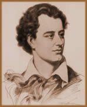
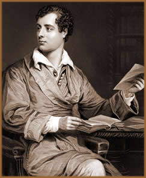
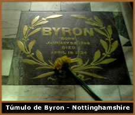

George
Gordon Noel Byron nasceu em 22 de janeiro de 1788, em Londres.
Apesar de nascer em família rica, seu pai, Capitão
John Byron, era um "bon-vivant" que destruiu toda a
riqueza. Sua mãe, Catherine Gordon Byron, vinha da família
dos Gordons escocês, uma família tradicional e muito
conhecida por sua ferocidade e violência. Havia, junto com
a esposa, imigrado para a França para fugir das cobranças
de credores. Porém, como ela não queria que seu
rebento nascesse em solo francês, não hesitou em
voltar à ilha da rainha. John ficou e encontrou abrigo
na casa de sua irmã. Em 1791, ele encontrou a morte, aparentemente
por suicídio, aos 36 anos. Logo após o nascimento
de Byron, sua mãe o levou para a Aberdeen, Escócia,
onde uma deformidade em seu pé logo ficou evidente.
Ganhou botas especiais e passou
por inúmeros tratamentos mas logo deixou estas dolorosas
experiências para trás. O pequeno George vivia mergulhado
em leituras, com atenção especial para a história
de Roma. Mas sua infância não se resumia a isto.
Ele era marcado pelo amor. Aos sete anos, Byron se apaixonou perdidamente
por sua prima, Mary Duff. Aos nove, sua babá o introduziu
aos prazeres da carne.
Com 10 anos, Byron herda o título nobiliárquico
de um tio-avô, tornando-se o sexto Lord Byron. As finanças
minguavam. Tudo o que remetia ao nome dos Byron era motivo de
processos por dívidas. O pequeno Byron foi enviado para
a academia do doutor Glennie, em Dulwich, e logo em seguida, para
Harrow. Durante um Natal, ele retornou para Newstead, que havia
sido alugada por Lorde Ruthyn, que o iniciou no bissexualismo.
Apaixonou-se perdidamente por Mary Ann Chaworth, uma vizinha.
Ficou tão obcecado que se recusou a voltar. Ruthyn praticamente
o obrigou a retornar.
Em sua adolescência, Byron foi tomando consciência
de seu poder. Possuidor de carisma, beleza e poder de sedução,
ele logo começou a aproveitar seus dons. Envolveu-se com
colegas, empregadas, professores, prostitutas e garotas que adoravam
um título de nobreza.
Em
1805, Byron teve um grande choque. Mary Ann casou-se. Logo, ele
se torna mais rebelde ainda. Arrumou um emprego em Cambridge mas
nunca trabalhava, já que esta era a moda para os descolados
da época. Era o tédio, o "spleen". Era
a forma que os, então, românticos viviam a vida,
e da qual Byron foi o mestre supremo. Escrevia versos e mais versos
e gastava muito dinheiro. Após entrar na "Trinity
College" de Cambridge, em 1807, publica seu primeiro livro
de poesia, Hours of Idleness (Horas de ócio),
mal recebido pela crítica da prestigiosa Edinburgh Review.
Byron respondeu com o poema satírico English Bards
and Scotch Reviewers (Bardos ingleses e críticos escoceses),
em 1809.
Em 1811, publica os dois primeiros cantos de Childe
Harold's Pilgrimage (Peregrinação de Childe
Harold), longo poema em que narra as andanças e amores
de um herói desencantado, ao mesmo tempo em que descreve
a natureza da península ibérica, Grécia e
Albânia. A obra alcançou sucesso imediato e sua fama
se consolidou com outros trabalhos, principalmente The Corsair
(O Corsário) em 1814 e Lara no mesmo
ano; além de The Siege of Corinth (O Cerco
de Corinto) em 1816. Nesses poemas, de enredos exóticos,
Byron confirmou seu talento para a descrição de
ambientes.
Em 1815 casa-se com Anne Milbanke. Muda-se para
a Suíça em 1816, após o divórcio de
Lady Byron, causado pela suspeita de incesto do poeta com sua
meia-irmã Augusta Leigh. Na Suíça escreve
o canto III de Childe Harold's Pilgrimage, The Prisoner
of Chillon (O prisioneiro de Chillon) e o poema
dramático Manfred, enigmático e demoníaco.
Em Genebra vive com Claire Clairmont e faz-se amigo de Shelley.
Passam horas discutindo filosofias e poesias. Navegavam pelo lago
e visitam os cenários da Nova Heloísa,
de Rousseau. Chegaram, inclusive, a trocar rosas e carícias.
Numa noite chuvosa em Diodati, o grupo decidiu
compor histórias macabras. Nasceu ali Frankenstein
de Mary Shelley e O
Vampiro de Polidori.
Compôs então, em 1818, o canto IV
de Childe Harold's Pilgrimage e Beppo - A Venetian
Story (Beppo - Uma história veneziana), poema
em oitava-rima, de tom ligeiro e cáustico, em que ridiculariza
a alta sociedade de Veneza. Em 1819 começou o poema herói-cômico
Don Juan, sátira brilhante e atrevida, à
maneira do século XVIII, que deixaria inacabada. No mesmo
ano ligou-se à condessa Teresa Guiccioli, seguindo-a a
Ravena onde, juntamente com o irmão dela, participou das
conspirações dos carbonários.
Em
novembro de 1821, tendo fracassado o movimento revolucionário
dos carbonários, Byron partiu para Pisa. Em 1822 fundou,
com Leigh Hunt, o periódico The Liberal. Foi a seguir para
Montenegro e daí para Gênova. Nomeado membro do comitê
londrino pela independência da Grécia, embarcou para
aquele país em 15 de julho de 1823, a fim de combater ao
lado dos gregos, os turcos, onde escreveu o drama The Deformed
Transformed (O Deformado Transformado), em 1824.
Passou quatro meses em Cefalônia e viajou
para Missolonghi, onde morreu em 19 de abril de 1824, após
contrair uma misteriosa febre.
A obra e a personalidade romântica
de Lord Byron tiveram, no início do século XIX,
grande projeção no panorama literário europeu
e exerceram enorme influência em seus contemporâneos,
por representarem o melhor da sensibilidade da época, conferindo-lhe
muito de sedução e elegância mundana. Lord
Byron teve uma vida pessoal bastante conturbada: na juventude
foi acusado de abuso sexual pela prima, homossexualismo e também
foi um dos primeiros escritores a descrever os efeitos da maconha.
Em meio a toda essa agitação existencial, que se
tornou o paradigma do homem romântico que busca a liberdade,
Byron escreveu uma obra grandiloqüente e passional. Encantou
o mundo inicialmente com seus poemas narrativos folhetinescos,
em que não faltam elementos autobiográficos, como
Childe Harold's Pilgrimage, e depois o assustou com a
faceta satírica e satânica que apresenta em poemas
como Don Juan. Foi um dos principais poetas ultra-românticos.
O cinismo e o pessimismo de sua obra haveriam de criar, juntamente
com sua mirabolante vida, uma legião de jovens poetas "byronianos"
por todo o mundo, chegando até o Brasil na obra de grandes
escritores, como Álvares
de Azevedo.
Por Spectrum
Obras
Disponíveis:
Contos (Downloads)